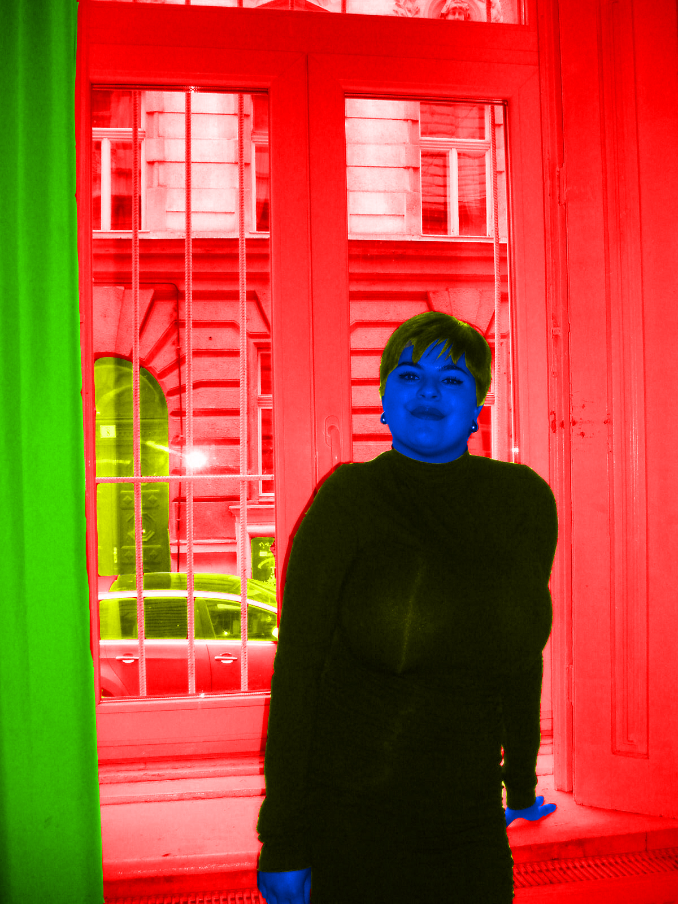

MOJE VJEŽBE
Ovo su vježbe koje sam radila za kolegij Digitalni multimedij 1.
VJEŽBE - vektorska grafika
1. vježba - font
2. vježba - Bezierova krivulja, precizno crtanje
Otvori moju 2. vježbu!
3. vježba - boja, transformacije
Otvori moju 3. vježbu!
Otvori moju 3.(2) vježbu!
4. vježba - gradijenti, transparencija
Otvori moju 4. vježbu!
Otvori moju 4.(2) vježbu!
Projektni zadatak 1
Otvori moj 1. projektni zadatak!
VJEŽBE - piksel grafika
5. vježba - retuširanje

6. vježba - koloriranje

7. vježba - fotomontaža
Projektni zadatak 2
VJEŽBE - video/web
8. vježba - cinemagraf


9. vježba - video obrada
10./11. vježba - web stranica u HTML-u i postavljanje na github
Otvori moju 10./11. vježbu!